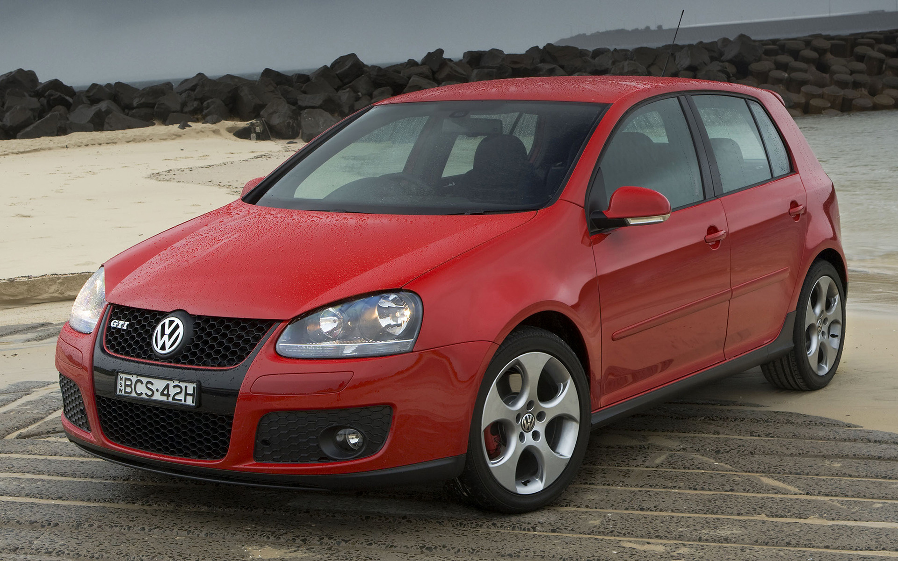

Características
- Motor: Inline-4 de 2.0 litros
- Potencia: 200 caballos de fuerza
- Aceleración (0-100 km/h): 6.9 segundos
- Velocidad máxima: 238 km/h
- Transmisión: Manual de 6 velocidades
- Suspensión: Independiente en las cuatro ruedas
- Frenos: Discos ventilados en las cuatro ruedas con ABS
- Neumáticos: Bridgestone Potenza RE050A

Descripción
El Volkswagen Golf GTI V es la quinta generación del emblemático hatchback deportivo de Volkswagen. Introducido en 2004, el Golf GTI V continúa la tradición de ofrecer un rendimiento emocionante y un manejo ágil en un paquete compacto y versátil.
Equipado con un motor Inline-4 de 2.0 litros y una transmisión manual de 6 velocidades, el Golf GTI V ofrece una potencia de 200 caballos, lo que permite una aceleración impresionante y una velocidad máxima emocionante. La suspensión independiente en las cuatro ruedas y los frenos de disco ventilados en las cuatro ruedas garantizan un manejo deportivo y seguro en cualquier situación.